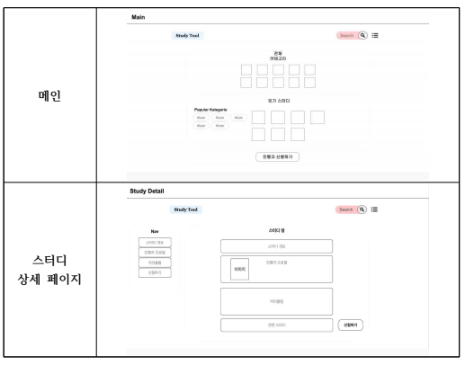
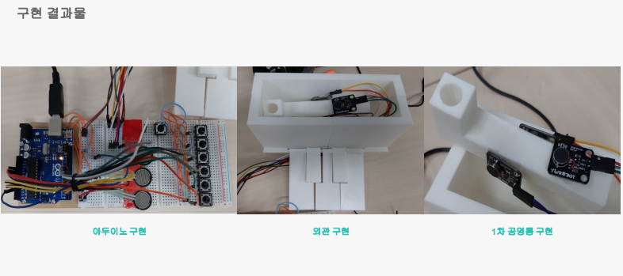
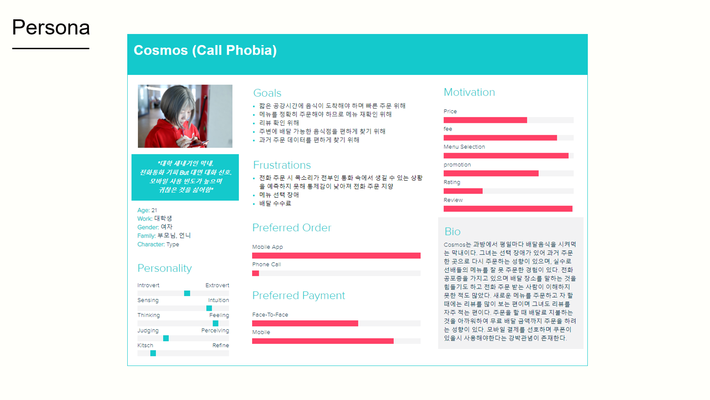

Ruby on Rails 기반
스터디 관리 웹 서비스 설계 및 구현
2019.05.14. ~ 2019.06.11.
초/중/고/대학교 약 16년간 공부를 했지만, 실무에서 사용할만한 지식/지혜에 대한 학습은
매우 부족하다. 또한, 이직 주기, 직업이 없어지고 생겨나는 주기가 빨라지고, 평생직장의 개
념이 사라지면서 사람들은 막연히 미래에 대해 불안감을 가지게 되었다. 이러한 변화로 인
해 인생의 전반적인 계획과 목표를 이루기 위해서는 한가지만을 추구하는 것이 아닌 새로
운 역량을 쌓아 나가야 한다.
본 과제는 교육을 통해 기업이 원하는 인재상과 실제 구직자들의 역량이 일치하지 않는
불균형을 없애고 공부를 끝까지 하게 도와줌으로써 실적인 실력향상이 이뤄지도록 초점을
둔 ‘스터디파이’를 모티브로
Ruby 기반 웹 프레임워크인 Ruby on Rails를 기반하여 스터디 관리 서비
스를 설계 및 구현하였다. Rails의 scaffolding 기능을 이용하여 MVC 모델을 쉽게 구현하였
으며, DB와의 데이터 통신을 편리하게 구현할 수 있었다.
기존 스터디파이 홈페이지는 모바일 친화적인 디자인을 가지고 스크롤 형식의 웹사이트였
다. 기존 사이트와 차이점이라 하면 모바일보다는 데스크탑에서도 사용성을 높이는 방향으로
UI를 설계하였고, 부가 서비스없이 핵심 기능을 위주로 구현했다는 점을 들 수 있다.
하지만 본 과제에서 기능 설계에 초점을 맞추다보니 Rails 원칙을 지키지 못했다는 점이 개
선해야 될 부분이라 할 수 있다. Rails 철칙 중 하나인 코드 중복을 최소화하기 위하여 모델
에 메소드화하는 작업이 필요하며, 코드의 명명 규칙이 일정하지 못하다는 점에서 유지보수에
취약하다는 점을 개선해야 될 부분이다.
추후 앞서 제시한 부분뿐만 아니라 홈페이지에 접속하면 자동으로 비회원 계정이 생성되어
세션으로 저장하여 비회원도 index, show 액션이 가능하게 할 필요가 있을 것으로 보인다.

아두이노 기반 MIDI Controller 개발
: 공명 제어 시스템
2018.09.19. ~ 2018.12.26.
MIDI Controller는 MIDI(Musical Instrument Digital Interface) 프로토콜을 이용한 하드
웨어 또는 MIDI 데이터 생성 및 전송하는 소프트웨어를 의미한다[1]. 현재 MIDI
Controller는 공명 구현 기술이 적용된 제품이 부족하고 이마저도 인터페이스에서 오는
문제점이 있다. 또한, 일반적으로 MIDI Controller를 제어하는데 움직임의 제약이 있어
자유도가 낮은 실정이다. 이를 해결하기 위해 ROLI사는 모듈 형태로 확장이 가능하고
5D Touch 기술이 적용된 Seaboard를 개발하였다. 5D Touch 기술은 Strike, Glide, Slide,
Press, Lift 총 5가지의 기술을 말한다[2].
본 설계에서는 Seaboard를 모티브로 Open Source 기반의 마이크로 컨트롤러인 아두
이노를 활용하여보다 쉽게 접근할 수 있도록 하였다. 아두이노를 활용한 공명 제어 시스
템을 개발 방안을 제시하고, 이를 MIDI 장치에 적용해보기 위한 시뮬레이션을 하였다.
압전센서와 진동 센서를 이용한 시스템 시뮬레이션으로 공명 제어 시스템의 가능성을
보여준다.
하드웨어적 관점에서 아두이노를 활용한 MIDI Controller의 공명 제어
시스템 개발 방안을 제시하였다. 공명통에 부착된 진동 센서와 파이프 오르간 형태의 공
명통을 이용하여 건반을 누를 때 압력변화로 공명을 형성하는 하드웨어 관점에서 구현
하였다.
MIDI – 시리얼 Bridge Program을 이용하여 컴퓨터와 아두이노 사이의 시리얼 통신을
통해 MIDI가 생성되고 출력되는 것을 확인할 수 있었다. MIDI 출력은 확인하였으나, 1차
공명통과 진동 센서를 통한 공명 현상은 스피커 크기에 비해 공명통 크기가 작아 확인
이 어려웠다. 스피커 모듈을 이용한 공명 현상 확인에서 가능성을 확인하였지만, 확장성
과 자유도가 낮은 문제점이 발견되었다.
그러므로 하드웨어적 관점에서만 공명 제어 시스템을 개발하는 것은 오히려 경쟁력이
떨어질 것으로 생각된다. 소프트웨어적 관점과 하드웨어적인 관점을 융합하여 새로운 시
스템 프로세스의 필요성이 요구된다고 생각된다.

배달의 민족 UX 분석
2018.09.13. ~ 2018.10.02.
2학년 2학기 ICT융합기술론 배달의 민족 사용성 평가

고령층의 사회적 고독감 해소를 위한 커뮤니티 모바일 앱 설계 : 2018 정보통신학회 추계학술대회
2018.08.29. ~ 2018.10.17.
OECD (경제협력개발기구) 발표에 따르면 2009년부터 우리나라 노인 자살률은 높은 수치를 기록하고 있으며 관련 이유로 젊은 시절과 비교되는 사회적 참여도와
우울증이 있다. 정보화시대에 접어들어 커뮤니티 사이트의
영향으로 유대관계의 형성 및 확장이 쉬워졌다. 하지만 노인을 위한 커뮤니티 사이트가 부족하고 이마저도 고령친화적이지 않은 인터페이스 때문에 이용하기 어려운
실정이다. 이에 본 논문에서는 노인의 사회적 고독감 해결 및
정보화 사회 참여를 위한 커뮤니티 모바일 앱에 관한 내용을 서술하고자 한다. 노인이 커뮤니티 사이트를 사용하기 힘든 이유에 대해 분석하고, 사용자 평가 모델
중 하나인 PACMAD를 바탕으로 사용자 시나리오에 초점을
맞추어 신체적, 인지적 조건을 고려한 커뮤니티 모바일 앱 인터페이스 및 콘텐츠를 제안한다. 이로써 고령층의 정보화 사회 참여를 이끌어내는데 바탕이 되고자
한다.